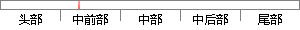

建安七子，是汉建安年间（196—220年）七位文学家的合称，包括孔融、陈琳、王粲、徐干、阮瑀、应玚、刘桢。
片段位置图

相似结果|
1
原句片段： 建安七子，是汉建安年间（196—220年）七位文学家的合称，包括孔融、陈琳、王粲、徐干、阮瑀、应玚、刘桢。
相似片段 1：建安七子指东汉末建安时期曹氏父子之外的七位著名诗人。他们是,孔融、陈琳、王粲...建安七子:建安年间(196～220)七位文学家的合称,包括:孔融、陈琳、王粲、徐干...
相似片段 2：建安七子和唐宋八大家全是谁?建安年间(196～220)七位文学家的合称。包括:孔融、陈琳、王粲、徐干、阮瑀、应玚、刘桢.唐宋八大家是唐宋时期八大散文作家的合称,即...
相似片段 3：【摘要】: 建安七子 ——雅好慷慨,梗概多气 阮瑀、应玚、刘桢。 建安七子,是建安年间(196～220)七位文学家的合称,包括孔融、陈琳、王粲、徐干、 “七子”...
相似片段 4：建安七子,是建安年间(196～220)七位文学家的合称,包括孔融、陈琳、王粲、徐干、阮瑀、应玚、刘桢。 “七子”之称,始于曹丕所著《典论·论文》:“今之文人,鲁...
相似片段 5：建安七子-建安七子,是指建安年间(196～220)七位文学家的合称,包括:孔融、陈琳、王粲、徐干、阮瑀、应玚、刘桢。这七人大体上代表了建安时期除曹氏父子而外的...
相似片段 6：建安七子,是汉建安年间(196—220年)七位文学家的合称,包括孔融、陈琳、王粲、徐干、阮瑀、应玚、刘桢。这七人大体上代表了建安时期除曹氏父子(即曹操、曹丕、...
相似片段 7：建安七子,是汉建安年间(196—220年)七位文学家的合称,包括孔融、陈琳、王粲、徐干、阮瑀、应玚、刘桢。这七人大体上代表了建安时期除曹氏父子(即曹操、曹丕、...
相似片段 8：建安七子_建安七子,是东汉建安年间(196—220年)七位文学家的合称,包括孔融、陈琳、王粲、徐干、阮瑀、应玚..._陆义_ludaniao的和讯博客
相似片段 9：建安七子 是建安年间196 0七位文学家的合称 包括 孔融、陈琳、王粲、徐干、阮瑀、应玚、刘桢。这七人大体上代表了建安时期除曹氏父子外的优秀作者 所以“七子...
相似片段 10：建安七子分别是谁?建安七子,是建安年间(196～220)七位文学家的合称。曹丕在《典论·论文》中评述当世文人,特别标举了孔融、陈琳、王粲、徐干、阮瑀、应瑒、...
|
※ 片段修改建议 ※
近似词参考：- 包括：包罗 包孕 包含 囊括
系统自动生成语句： 建安七子，是汉建安年间（196—220年）七位文学家的合称，包罗孔融、陈琳、王粲、徐干、阮瑀、应玚、刘桢。
注：本片段修改建议为系统自动生成，仅供参考。